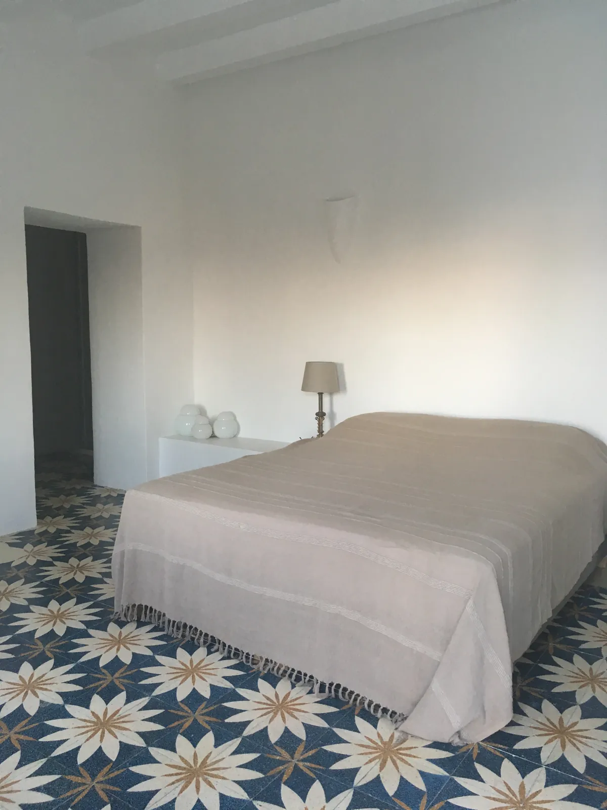
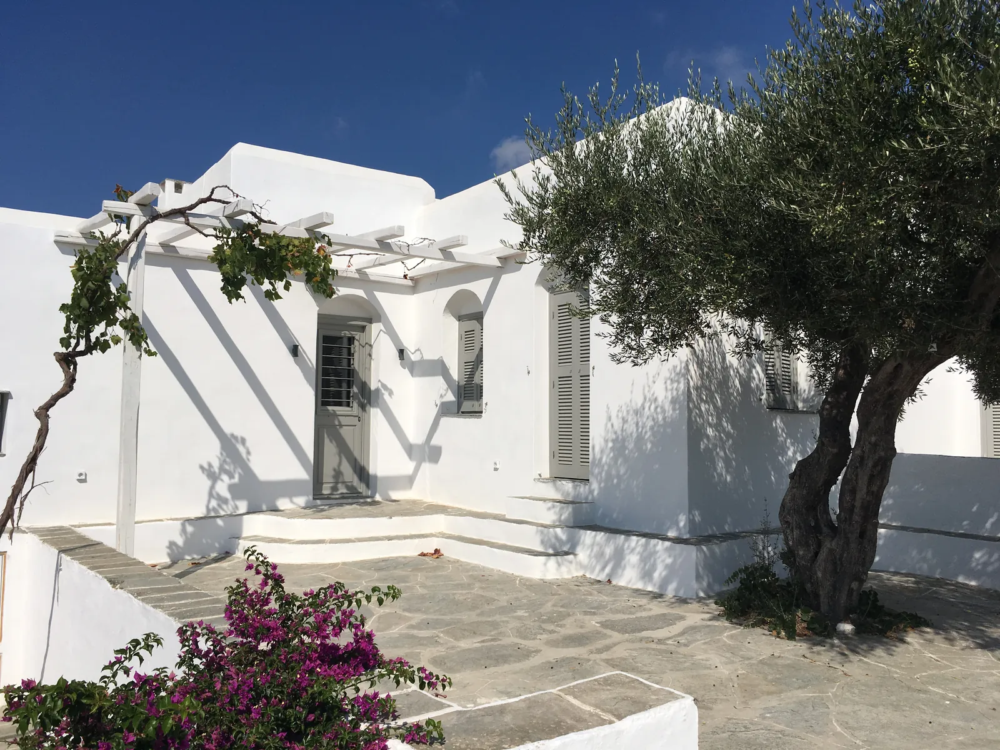

Stouls Studio / Portfolio / Maison à Sifnos
Maison à Sifnos
Un club de jazz que toute l'île connaissait, devenu une maison de vacances de 150 m².
- Type
- Maison de vacances
- Lieu
- Sifnos, Grèce
- Surface
- Environ 150 m²
- Intervention du studio
- Transformation complète d'un ancien club de jazz en maison
Le bâtiment était un club de jazz, bien connu à Sifnos. Il comptait douze toilettes et des cuisines professionnelles. Tout a été repensé pour en faire une maison.
Le sol d'origine a été conservé, nettoyé et restauré. Le projet garde le caractère grec et sifniote du lieu et la mémoire du club, avec une approche simple : de la chaux sur les murs et des matériaux locaux, avant tout la pierre de l'île.
Dehors, des murs blancs épais, un escalier extérieur et une cour pavée sous une pergola. Dedans, le salon s'installe sous un plafond de poutres peintes avec un passage en arche, et la cuisine en chêne court le long d'un mur sous une hotte enduite, sur des carreaux de ciment à motif d'étoiles.




Un projet comme celui-ci
Si ce projet ressemble à ce que vous avez en tête, dites-le à Margaux. Un lien vers cette page et deux lignes sur votre budget et votre calendrier suffisent pour commencer.
Précédent : Maison de campagne, BourgogneSuivant : Appartement avec mezzanine, Montparnasse